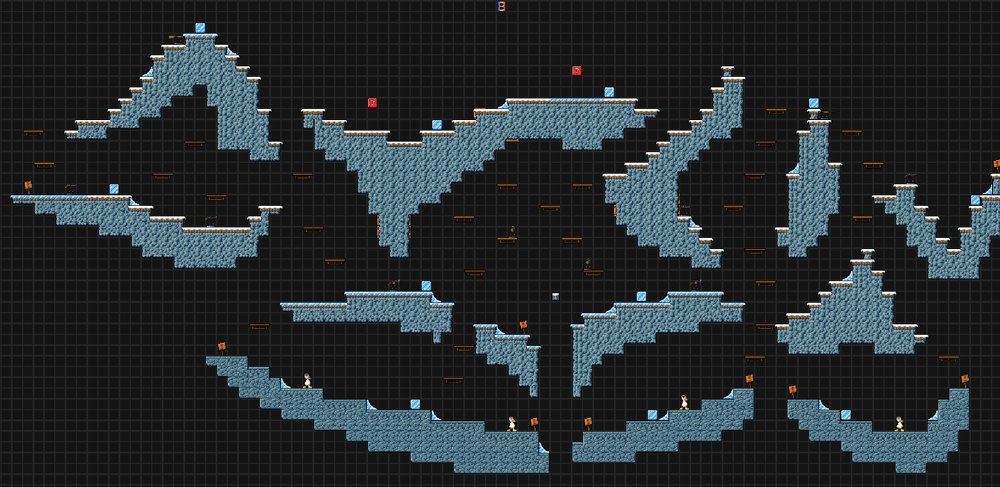
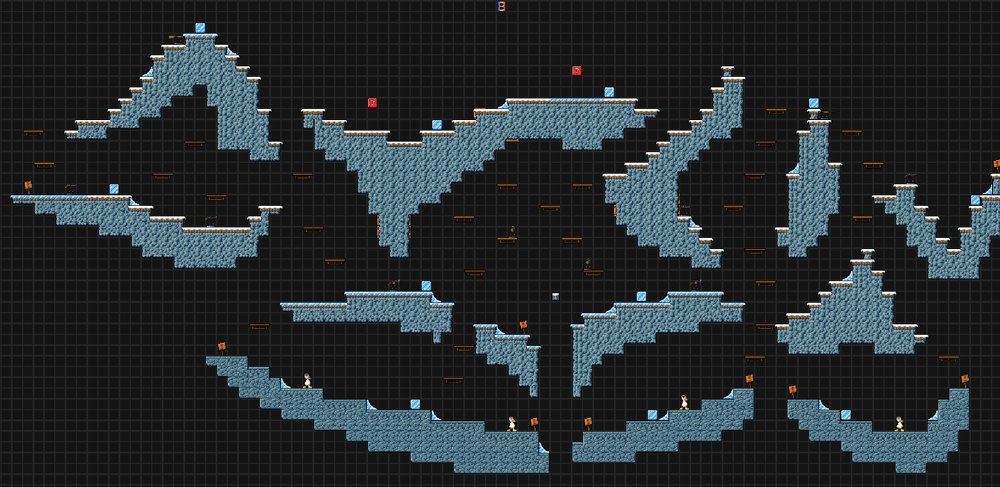
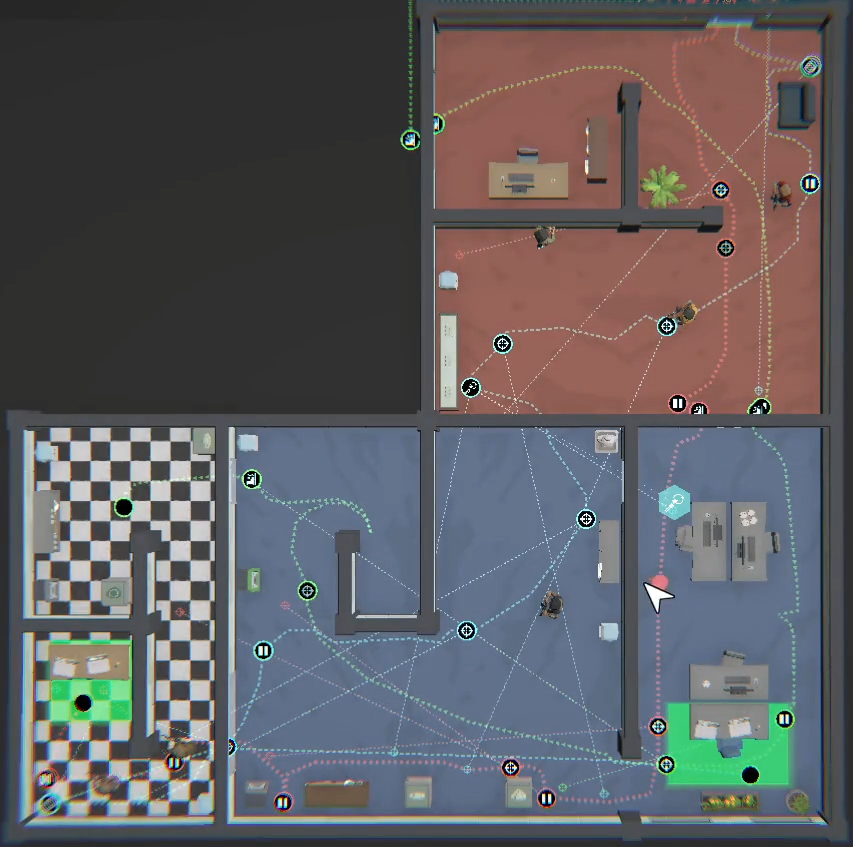
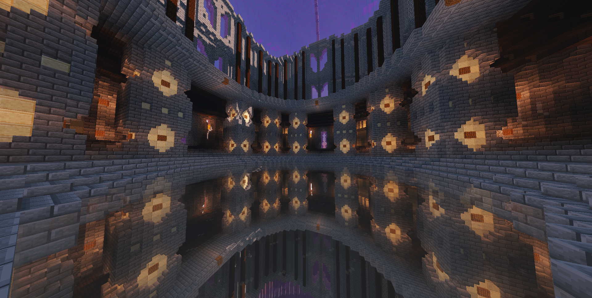

Photographie
Au fil de mon parcours personnel, j’ai découvert une véritable passion pour la photographie, un domaine qui est rapidement devenu l’un des moyens d’expression où je m’épanouis le mieux. Cette activité nourrit ma créativité et me permet de capturer des perspectives uniques.
DCB Pictures
DnD
Donjons et Dragons est un jeu de rôle qui me permet d’exprimer ma créativité à travers des scénarios immersifs et des interactions sociales enrichissantes.
Calabozos & Dragones
Level Design
Les jeux vidéo occupent une place importante dans ma vie. Ils sont à la fois un moyen d’exprimer ma créativité et une opportunité de partager des expériences avec des personnes du monde entier.
Level DesignPlus en detail
La photographie
Dans mon parcours photographique, j'ai commence a l'age de 10 ans en essayant mon premier appareil photo sur des fourmis.
Quelques ans plus tard, j'ai decouvert la photographie de rue et j'ai commence a prendre des photos de la ville de Mexico.
Eventuelment lors de mes etudes au Lycxée Franco Mexicain, j'ai eu l'opportunite de me certifier chez Canon Academy et j'ai pris un gout pour la photographie macro et urbaine.
Aujourd'hui non seulement j'ai eu la chance de voyager dans le monde mais aussi j'aime sortir dans la rue et prendre des photos interessante de la ville, des gens et des objets.
De mon cote je vois la photographie comme un moyen de capturer la vision a partir d'un point de vue different a l'habituel, et trouver un monde et une histoire differente dans le meme monde que nous connaissons.

Exposition dans le Grand Palais "The Soul Trembles" par Chiharu Shiota 2025

Exposition dans le Grand Palais "The Soul Trembles" par Chiharu Shiota 2025
Japon, Tokyo, Senso-ji 2023

Japon, Tokyo, Tokyo Tower 2023

Japon, Tokyo, Tokyo Sky Tree 2023
Donjons et Dragons
J’ai découvert le jeu de rôle Donjons et Dragons par hasard pendant la pandémie, et il a rapidement pris une place importante dans ma vie. En tant qu’organisateur de la table de jeu, ce loisir m’a permis de développer des compétences en leadership, en organisation et en gestion de groupe.
Ce jeu a également été une source d’épanouissement personnel, m’aidant à mieux exprimer mes émotions et à raviver ma créativité. Il m’a offert l’opportunité de concevoir des mondes détaillés, de raconter des histoires légendaires et de créer des aventures captivantes. Par ailleurs, Donjons et Dragons a enrichi mon parcours en me permettant de nouer de nouvelles amitiés tout en explorant des univers imaginaires.

Une carte dessinée par moi pour une aventure au monde imaginaire d'Iacedia
Une carte dessinée a l'aide d'un logiciel par moi pour une aventure au monde imaginaire de Sattia
Les mondes numériques
Depuis mon enfance, ma découverte des mondes virtuels a éveillé une fascination pour l’univers numérique. Avec le temps, j’ai compris que les jeux vidéo ne sont pas seulement un moyen de divertissement, mais également une forme d’expression créative et un outil puissant pour tisser des liens avec des personnes à travers le monde.
Ces univers m’ont offert l’opportunité de concevoir mes propres niveaux, puzzles, stratégies et créations, stimulant ainsi mon imagination et mon esprit d’innovation.

 

Quelques des mes conception de niveaux dans le jeu Duck Game
Conception d'une stratégie dans le jeu No Plan B

Réalisations des structures sur Minecraft pour un client Canadien
 Discord
Discord
 Instagram
Instagram
 LinkedIn
LinkedIn
 Email
Email
 WhatsApp
WhatsApp